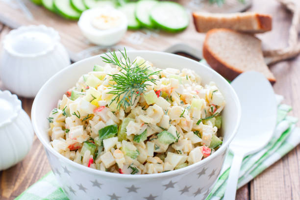

Crab salad

Description
The chilled dish of the delicious crab meat and crunchy celery that is tossed in a creamy dressing of mayonnaise and mustard is perfect for summer events. Each bite is loaded with meaty crab, lemon, fresh herbs, and a hint of spice for flavor
Ingredients
- 1 pound imitation crabmeat, flaked
- 1/2 cup finely chopped celery, or more to taste
- 1/2 cup reduced-fat ranch dressing
- 1/3 cup mayonnaise
- 1 tablespoon white sugar, or to taste
- 1 teaspoon minced fresh parsley
Steps
- Gently mix crabmeat, celery, ranch, mayonnaise, sugar, and parsley in a salad bowl until thoroughly combined.
- Refrigerate, stirring occasionally, for 8 hours to overnight.
- Stir again just before serving.